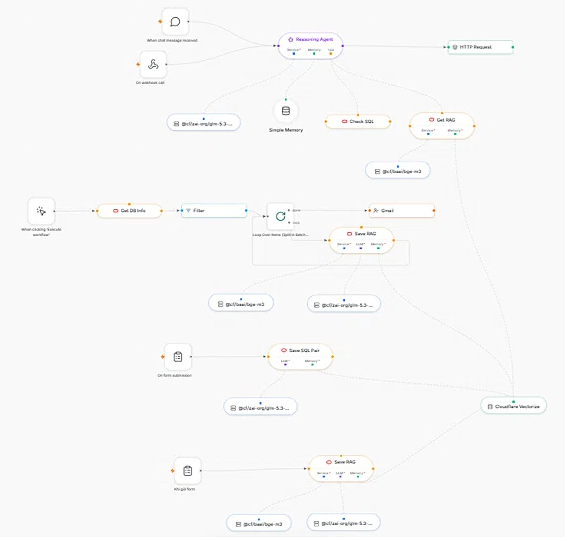
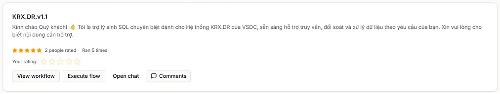

Workflow này cho phép bấm đúng một chức năng trên ứng dụng, bắt lại toàn bộ câu lệnh mà database vừa thực thi, chọn ra câu trả số liệu, lấy giá trị tham số, kiểm chứng với màn hình, rồi lưu thành một cặp “Yêu cầu số liệu – SQL” có định danh. Hỗ trợ Oracle, PostgreSQL, MySQL, SQL Server, IBM Db2 và MongoDB.
Workflow được xây dựng trên nền tảng AI Agents Hub, mỗi node đảm nhận một bước: nhận yêu cầu, sinh SQL, kiểm tra SQL, lấy bind, lưu cặp. Toàn bộ luồng chạy tự động, người dùng chỉ cần chọn chức năng và xác nhận kết quả.


KRX.DR.v1.1 đã được publish ở chế độ Community Sharing, sẵn sàng cho người khác xem, chạy và đánh giá.Tách rời từng bước, có thể kiểm tra và chạy lại một phần. Kết quả được lưu thành cặp có định danh, dùng lại được cho nhiều môi trường database khác nhau.
Mỗi tài liệu dưới đây mô tả đầy đủ 11 bước lọc cặp “Yêu cầu số liệu – SQL”, kèm câu lệnh cụ thể cho từng hệ quản trị. Bấm vào một database để mở hướng dẫn tương ứng.
Dùng V$SQL, V$SQL_BIND_CAPTURE, trace file để bắt SQL và bind.
Dùng pg_stat_statements, pg_stat_activity, log bind để lấy tham số.
Dùng Performance Schema và general log để bắt SQL cùng prepared statement.
RelationalDùng DMV (sys.dm_exec_query_stats) và Extended Events để bắt bind.
Dùng monitor function MON_GET_PKG_CACHE_STMT và Event Monitor.
1) Chuẩn bị database mẫu đúng chuẩn. 2) Chọn hướng dẫn theo database đang dùng. 3) Chạy đủ 11 bước. 4) Lưu cặp vào hệ thống quản lý yêu cầu số liệu.
Mỗi tài liệu đều có nút “Sao chép” cho từng câu lệnh. Bấm để copy nhanh, không cần chọn thủ công.